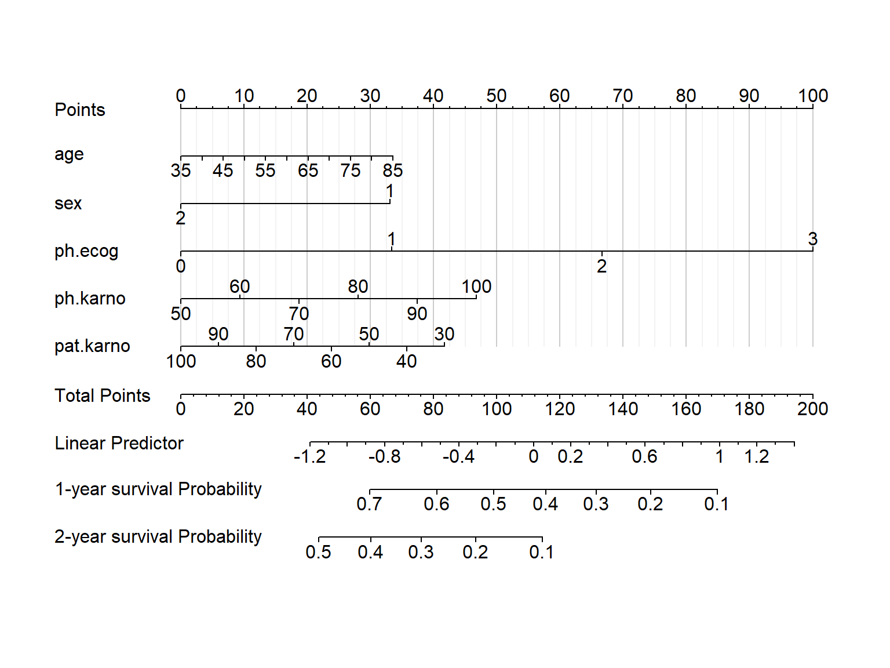

# 加载需要的R包和数据
library(survival)
rm(list = ls())
dim(lung)
## [1] 228 10
str(lung)
## 'data.frame': 228 obs. of 10 variables:
## $ inst : num 3 3 3 5 1 12 7 11 1 7 ...
## $ time : num 306 455 1010 210 883 ...
## $ status : num 2 2 1 2 2 1 2 2 2 2 ...
## $ age : num 74 68 56 57 60 74 68 71 53 61 ...
## $ sex : num 1 1 1 1 1 1 2 2 1 1 ...
## $ ph.ecog : num 1 0 0 1 0 1 2 2 1 2 ...
## $ ph.karno : num 90 90 90 90 100 50 70 60 70 70 ...
## $ pat.karno: num 100 90 90 60 90 80 60 80 80 70 ...
## $ meal.cal : num 1175 1225 NA 1150 NA ...
## $ wt.loss : num NA 15 15 11 0 0 10 1 16 34 ...8 Cox回归列线图绘制
下面给大家介绍几种cox回归列线图的绘制方法。
8.1 准备数据
Cox回归模型在医学统计中是一个很重要的统计方法，关于Cox比例风险模型的构建和结果解读，我写过一些实现方法以及细节解读的推文，大家可以参考：
这个是关于肺癌的生存数据，一共有228行，10列，其中time是生存时间，单位是天，status是生存状态，1是删失，2是死亡。其余变量是自变量，意义如下：
inst：机构代码，对于我们这次建模没啥用age：年龄sex：1是男性，2是女性ph.ecog：ECOG评分。0=无症状，1=有症状但完全可以走动，2=每天<50%的时间在床上，3=在床上>50%的时间但没有卧床，4=卧床不起ph.karno：医生评的KPS评分，范围是0-100，得分越高，健康状况越好，越能忍受治疗给身体带来的副作用。pat.karno：患者自己评的KPS评分meal.cal：用餐时消耗的卡路里wt.loss：过去6个月的体重减少量，单位是磅
8.2 方法1：rms
大多数情况下都是使用1代表死亡，0代表删失，下面这个演示数据集用2代表死亡。在这里没有影响，但有的R包会报错，需要注意！
library(rms)
# 使用rms包需要对数据进行“打包”操作
dd <- datadist(lung)
options(datadist = "dd")构建cox比例风险模型：
# 选择部分变量演示
coxfit <- cph(Surv(time, status) ~ age+sex+ph.ecog+ph.karno+pat.karno,
data = lung, x=T,y=T,surv = T
)指定你要计算哪一年的生存率：
# 构建生存函数，注意你的最大生存时间
surv <- Survival(coxfit)
surv1 <- function(x) surv(365,x) # 1年OS
surv2 <- function(x) surv(365*2,x) # 2年OS构建列线图数据:
# 构建列线图数据
nom <- nomogram(coxfit,
fun = list(surv1,surv2),
funlabel = c('1-year survival Probability',
'2-year survival Probability'),
fun.at = c(0.95,0.9,0.8,0.7,0.6,0.5,0.4,0.3,0.2,0.1))然后就是画图：
plot(nom,
lplabel="Linear Predictor",
xfrac = 0.2, # 左侧标签距离坐标轴的距离
#varname.label = TRUE,
tcl = -0.2, # 刻度长短和方向
lmgp = 0.1, # 坐标轴标签距离坐标轴远近
points.label ='Points',
total.points.label = 'Total Points',
cap.labels = FALSE,
cex.var = 1, # 左侧标签字体大小
cex.axis = 1, # 坐标轴字体大小
col.grid = gray(c(0.8, 0.95))) # 竖线颜色
这个图的解读方式和逻辑回归的列线图一模一样，这里就不再重复了，大家看逻辑回归的那篇。
8.3 方法2：regplot
使用regplot包实现。
library(regplot)
# 建立cox回归模型
coxfit <- cph(Surv(time, status) ~ age+sex+ph.ecog+ph.karno+pat.karno,
data = lung, x=T,y=T,surv = T
)
# 画图即可
aa <- regplot(coxfit,
#连续性变量形状，"no plot""density""boxes""ecdf"
#"bars""boxplot""violin""bean" "spikes"；
#分类变量的形状，可选"no plot" "boxes" "bars" "spikes"
plots = c("violin", "boxes"),
observation = lung[1,], #用哪行观测，或者T F
center = T, # 对齐变量
subticks = T,
droplines = T,#是否画竖线
title = "nomogram",
points = T, # 截距项显示为0-100
odds = T, # 是否显示OR值
showP = T, # 是否显示变量的显著性标记
rank = "sd", # 根据sd给变量排序
interval="confidence", # 展示可信区间
clickable = F # 是否可以交互
)除了以上两种方法外，之前还有另外两个R包可以使用：VRPM和DynNom，但是这两个包太老了，很久没更新了，所以目前只能通过下载安装包本地安装。目前不推荐使用了，如果你一定要用，可参考：Cox回归列线图（nomogram）的4种绘制方法